상품 탐색
Editorial Home, Collection, Search & Discovery 필터, 정렬, Predictive Search를 실제 상품 데이터와 연결했습니다.
글로벌 패션 쇼핑몰 외주 요구사항을 일반화해, 화면 설계에서 끝내지 않고 실제 Shopify Dev Store에 상품·검색·PDP·Ajax cart·다국어·Markets·고객 계정·테스트 결제까지 연결하고 주요 구매 흐름을 검증했습니다.
실제 Shopify Dev Store 보기 ↗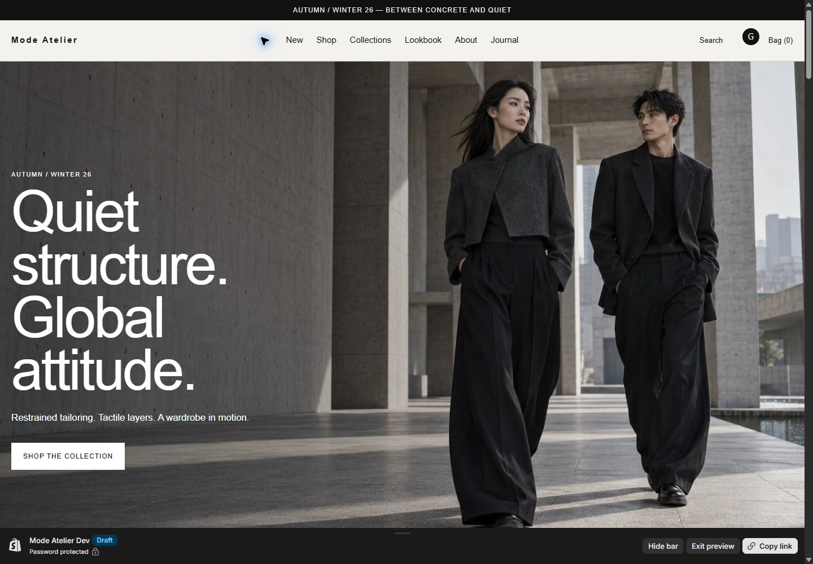
패션 커머스는 상품 옵션과 재고, 컬렉션 탐색, 검색·필터, 장바구니, 언어·국가 전환, 고객 계정, Checkout과 운영자 편집이 하나의 흐름으로 이어져야 합니다. 그래서 정적 목업이 아니라 실제 Shopify 데이터와 Admin 설정을 사용해 검증 범위를 만들었습니다.
Editorial Home, Collection, Search & Discovery 필터, 정렬, Predictive Search를 실제 상품 데이터와 연결했습니다.
Variant별 가격·URL·품절 상태, 상품 추천, Ajax add-to-cart, 실시간 badge, 수량·삭제·빈 장바구니를 검증했습니다.
KO/EN/JA와 Korea/US/Japan Markets, hosted customer accounts, Journal, FAQ, Lookbook, Theme Editor, SEO 구조를 구성했습니다.
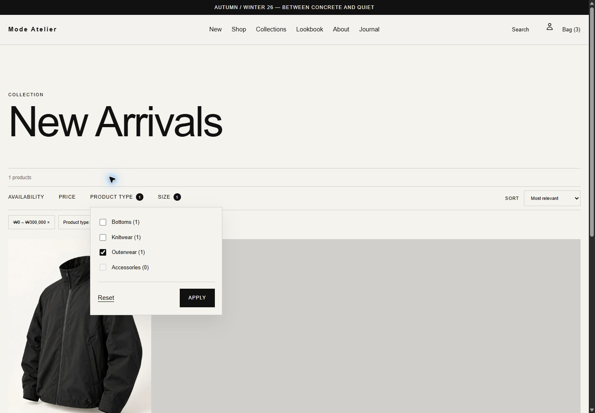
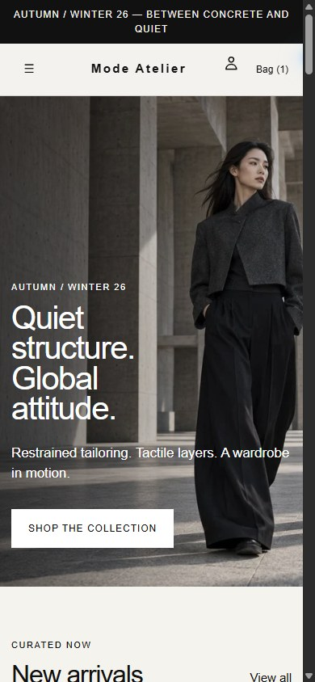
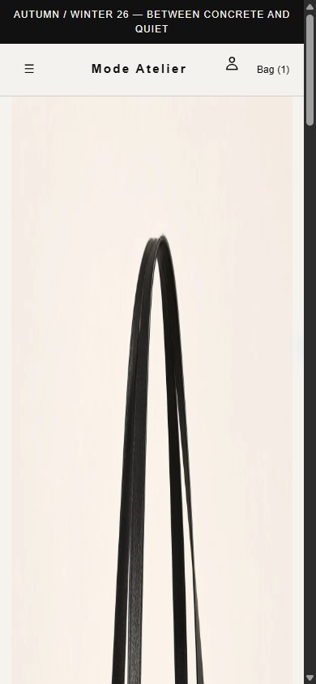
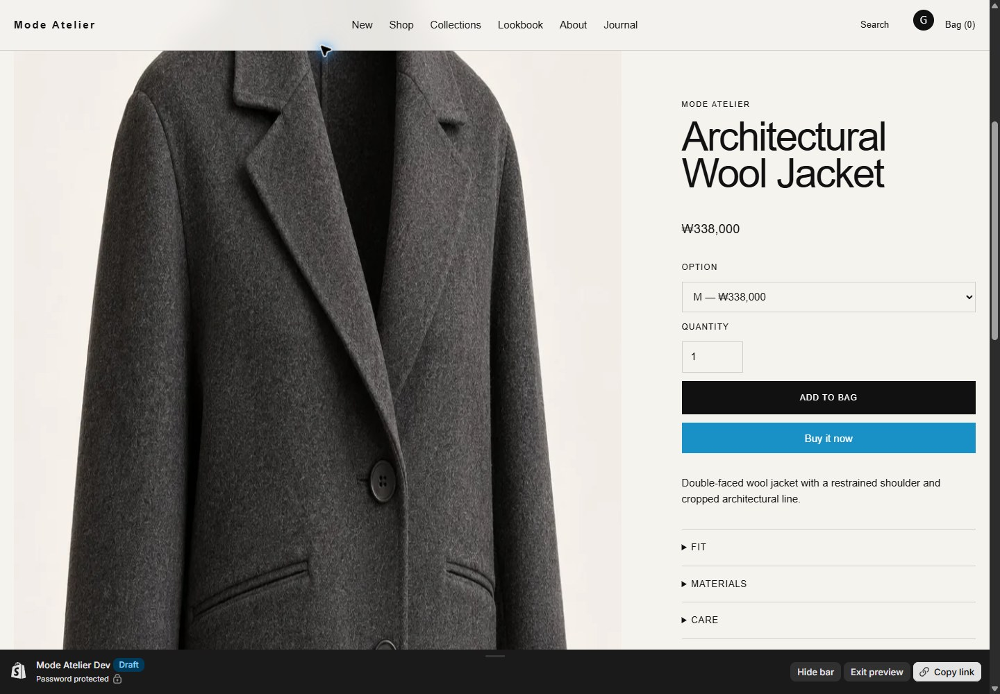
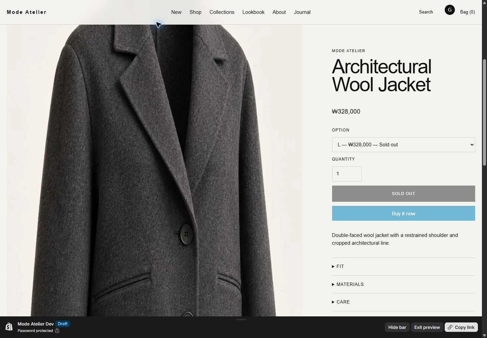
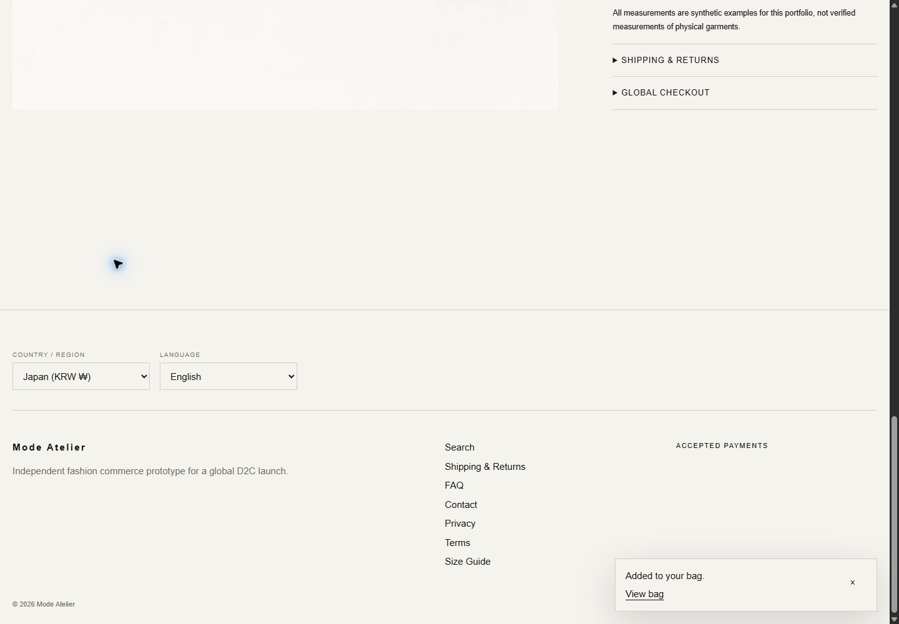
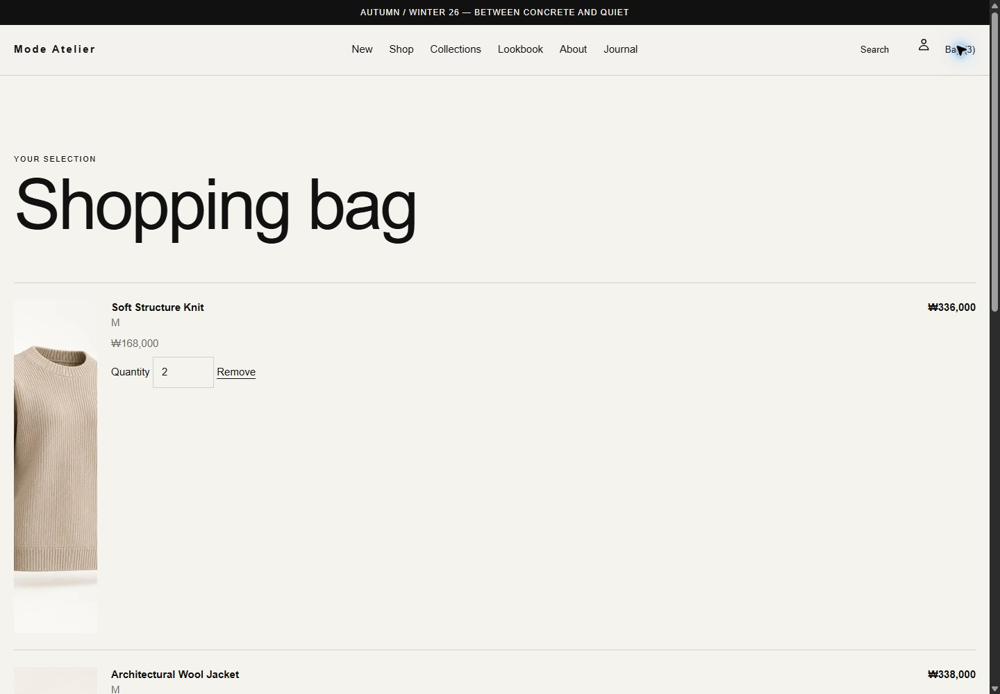
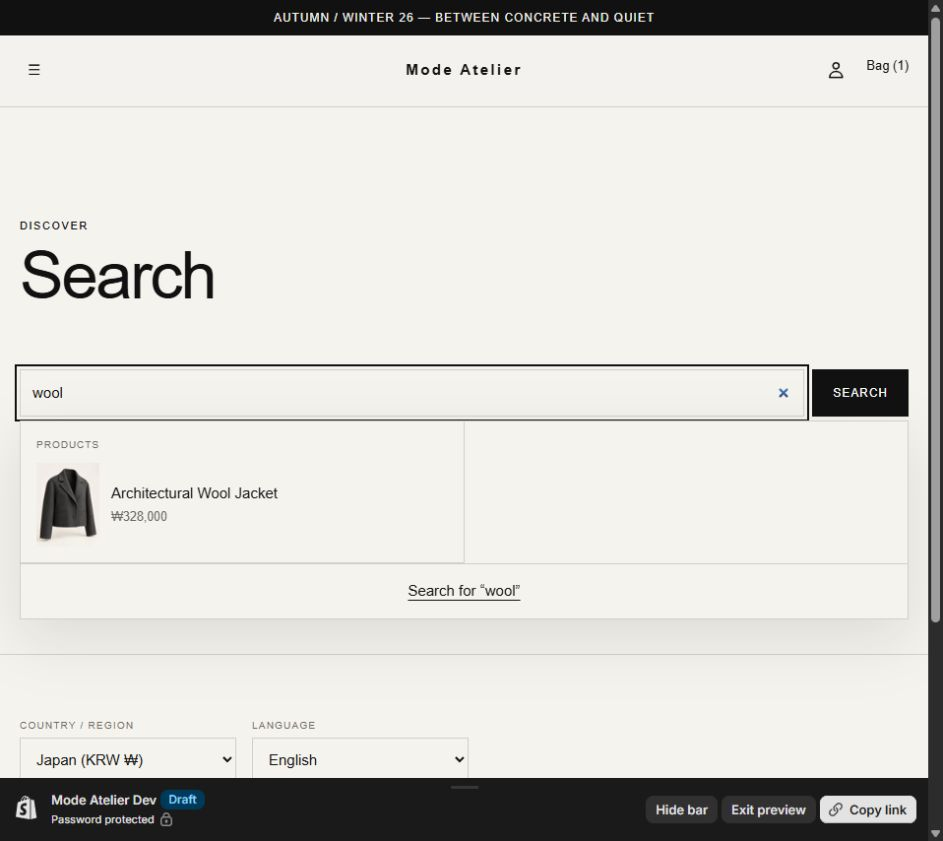
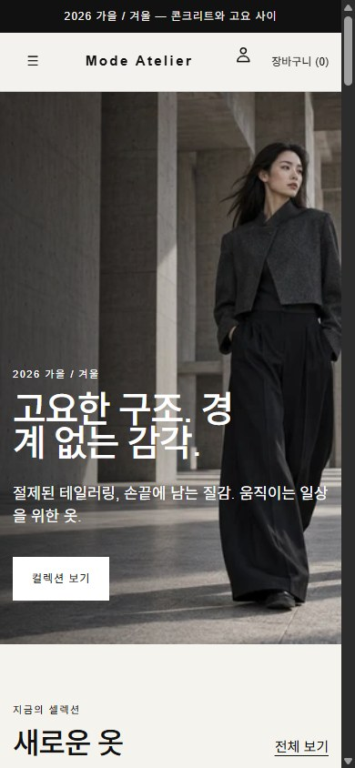
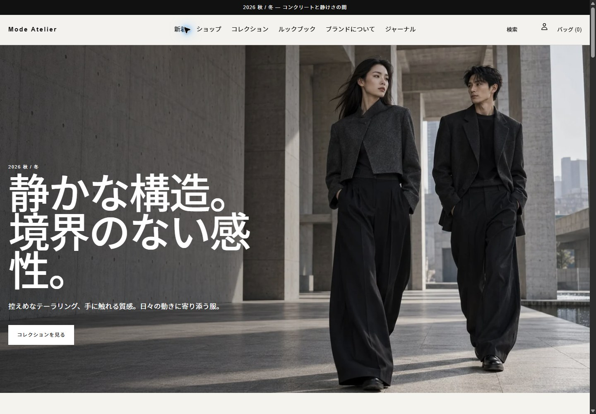
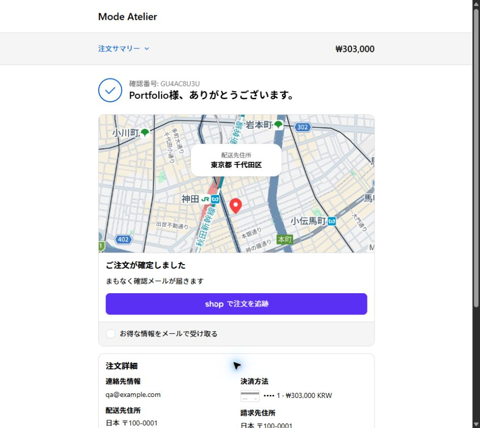
모든 이미지는 synthetic 데이터로 구성한 실제 Shopify draft preview의 검증 캡처입니다. 공개 production 스토어나 실제 결제 완료를 의미하지 않습니다.
Shopify 무료 테스트 환경에서 결제 거절 → 재시도 → 승인 → Test order 생성까지 확인했습니다. Checkout 흐름 검증을 위한 모의 결제입니다.
실제 카드·PayPal·간편결제 활성화는 merchant country, 사업자 심사, provider eligibility와 정책에 따라 달라집니다. 실 PG 연동 완료를 주장하지 않습니다.
Dev Store 기준으로 핵심 커머스 흐름을 구현·검증하고 인수인계 가능한 증거를 남겼습니다. Production go-live는 가맹점 의존 항목 때문에 별도 단계로 구분합니다.